D2L - Binder App
Surface AppAn effortless way to keep track of course content. The free cross-platform app, that makes it easy for students to store and view all their learning materials in one convenient place.
Overview
A personalized and interactive document reader that lets you view, annotate and organize your documents from virtually anywhere - it even works offline. All while giving you peace of mind knowing that these documents are safely stored in both the app and Binder Cloud. Always with you and working for you, Binder is ready when you are.
Information Architecture
We had to drill down to all the features the application provides and formulated the best IA for it. The main features include -
- One Place – Add documents from your favorite apps and D2L Courses.
- Organize – Organize related documents in hierarchy with Collections.
- View – Interact with and view available documents.
- Annotate - Apply underlines, highlights and pinned notes.
- Access Offline, Anywhere – Get the most out of documents even without Internet access.
Wireframes
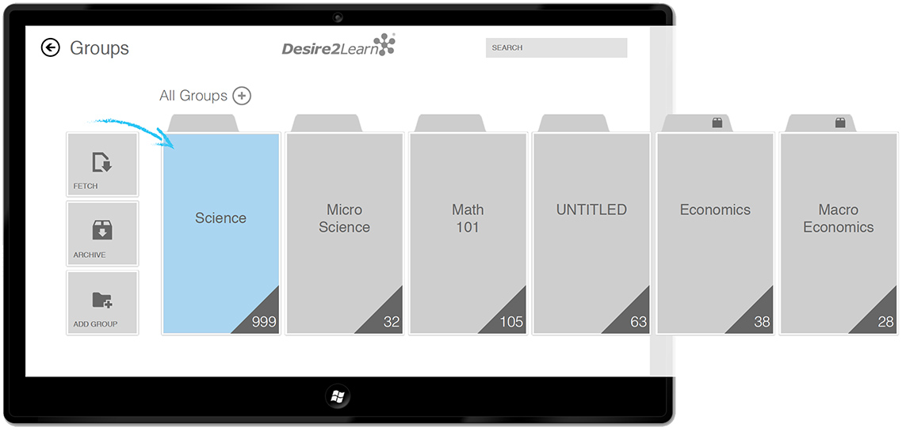 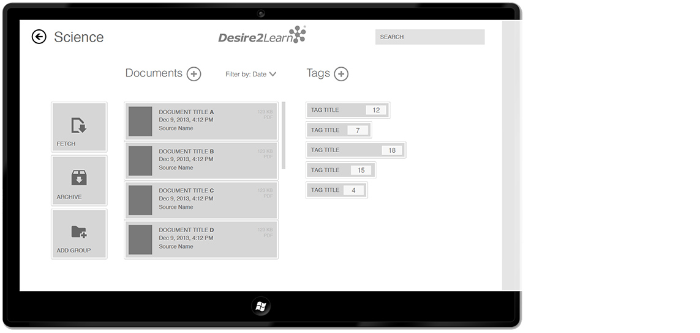 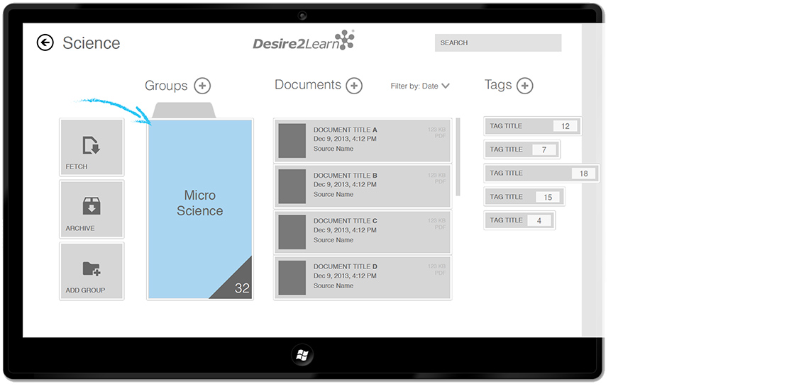 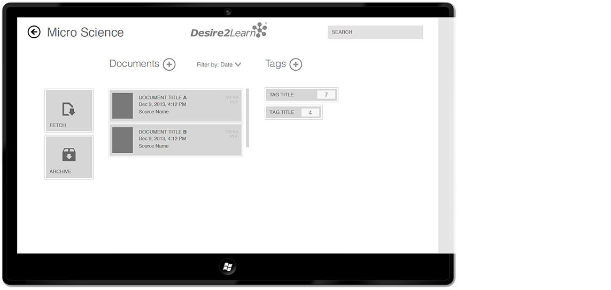 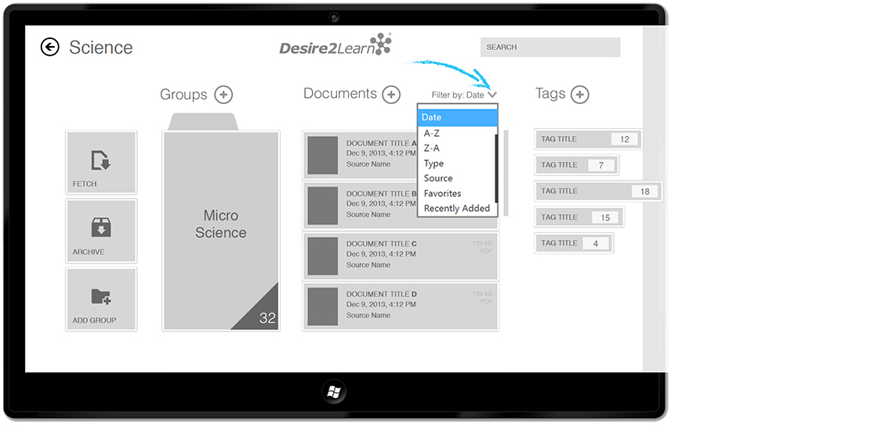 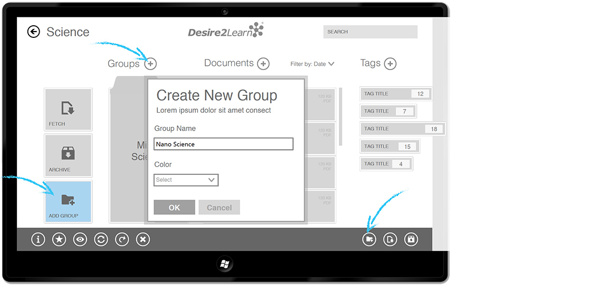 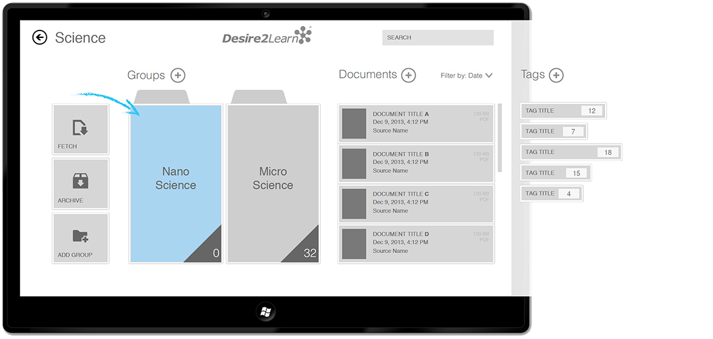 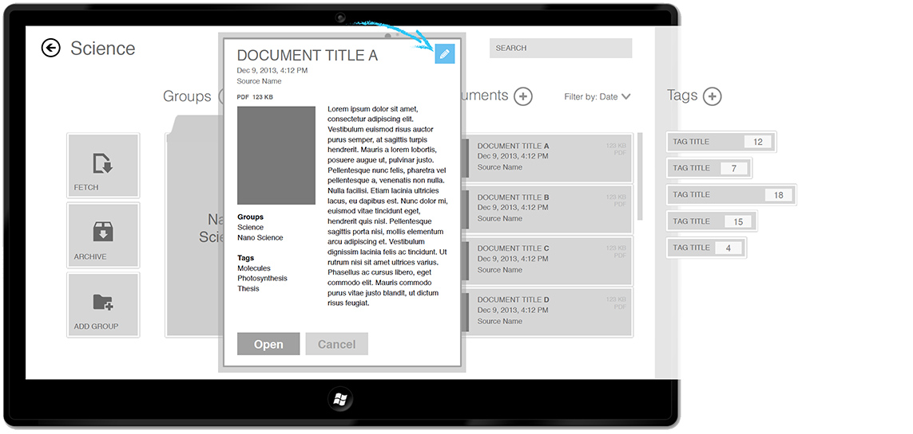 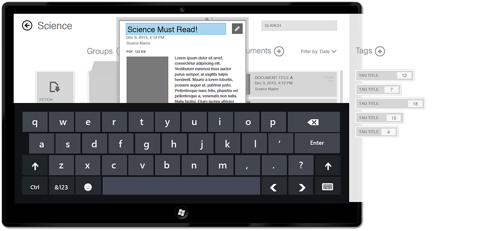 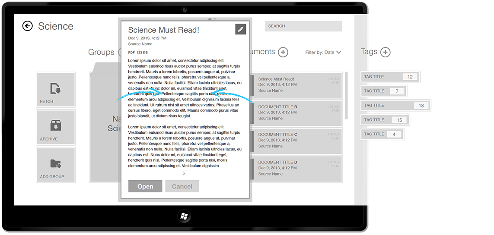 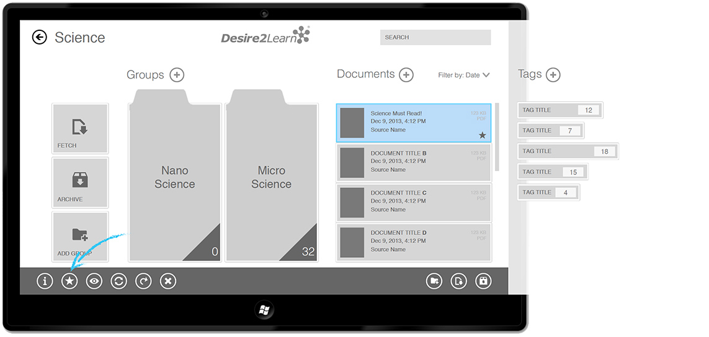 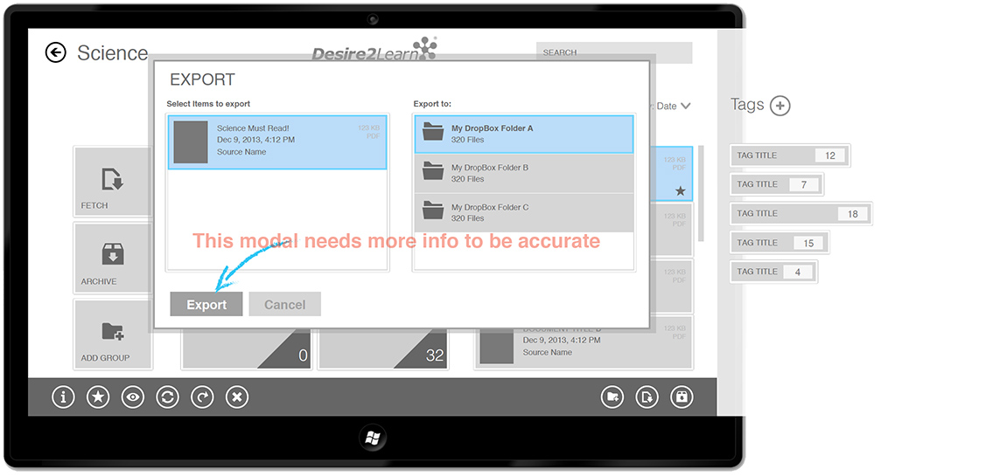 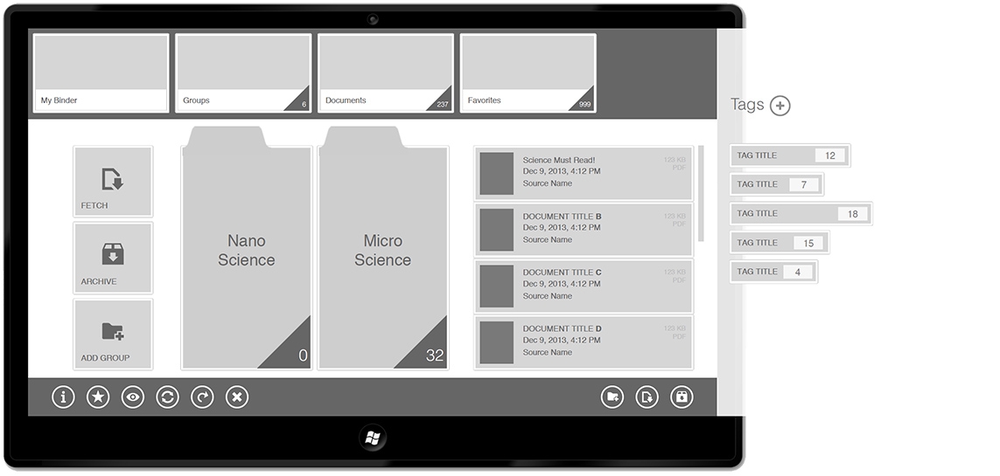Style Guide
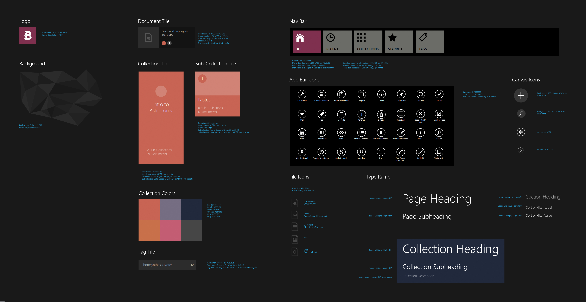Visual Design
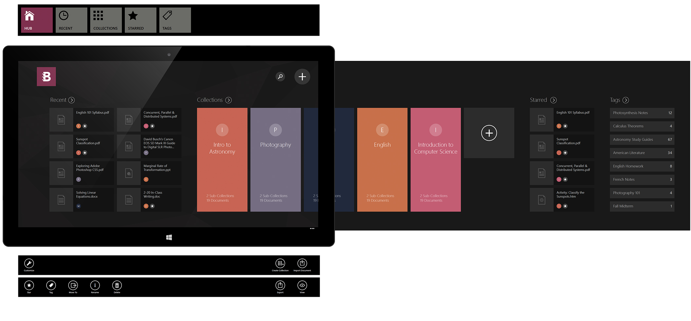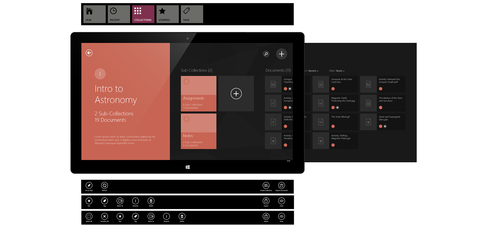
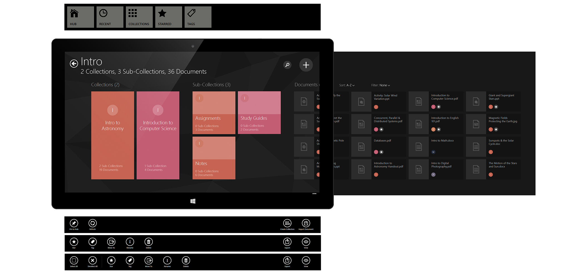